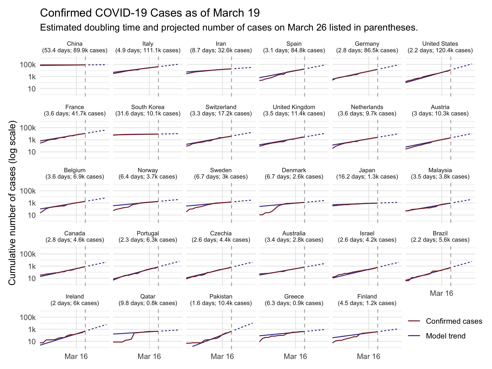
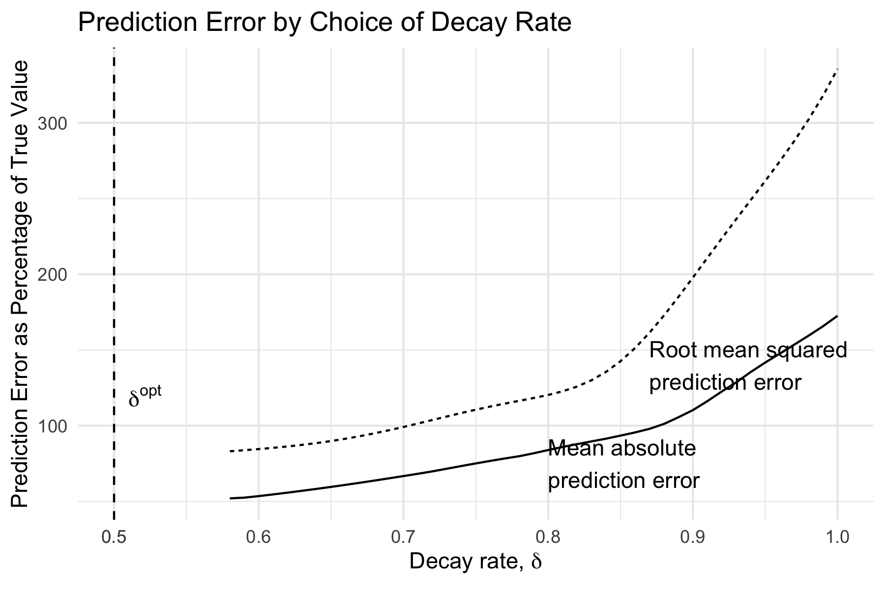

On Wednesday, the WHO declared COVID-19, the disease caused by the novel coronavirus, to be a global pandemic. The U.S. banned travel from Europe, the NBA suspended its season, and cities across the country implemented bans on large public gathers. Will these efforts to curb the spread of the coronavirus be successful? How will we know?
To answer this question, we need to know how many cases of COVID-19 we should expect given current trends. Unfortunately, I haven’t seen many readily accessible forecasts that are updated in real time as new data comes in. I realize that things can escalate quickly, but I didn’t have much sense of how soon to expect that to happen. So I set out to produce some short-term projections myself to help calibrate my expectations (and maybe quell some uncertainty-induced anxiety at the same time).
The result is shown in the figure below. It displays the cumulative number of cases in red along with the estimated model used to make forecasts in blue. The solid blue line shows how well the model predicts past data, while the dotted blue line shows projections over the next 7 days. Note that the vertical axis is on the logarithmic scale.

Before discussing the findings, a caveat: I am not an epidemiologist, and I have no special expertise with disease modeling. I simply fit some time series models to publicly available data on the number of confirmed cases each day. If my forecast is wildly different than that of a “real” epidemiology model, it’s probably because my forecast is wrong. With that out of the way…
This forecast suggests that there will be rapid spread of COVID-19 in the next week. Currently, Johns Hopkins CSSE reports that there are about 2,400 cases in the United States.[1] If the recent trend continues, the model projects that in 7 days, there will be over 29,000 cases in the United States. The number of cases in the U.S. is poised to double roughly roughly every 2 days. For reference, there has been a nearly 10-fold increase in confirmed cases over the past week — a doubling roughly every 1.4 days (compared to my model-based estimate for the next week of 1.8).
The average doubling time worldwide is slower, at 3.4 days. But there are significant differences is growth rate in different countries. In other countries that are struggling to contain COVID-19 — including Italy, Iran, Germany, and Spain — the disease is spreading nearly as fast as in the U.S. Meanwhile, the model estimates that several countries whose outbreaks started sooner have significantly slowed the spread. In China — the epicenter of the pandemic — the estimated doubling time is about 46 days. In South Korea, where there has been a large-scale response, the estimate is about 11 days.
These projections give a general sense of what we may be looking at if the current trend continues. But they shouldn’t be taken to be too precise. Most importantly, the public health interventions that are being rolled out — canceling large events, social distancing, etc. — should help to slow the growth of the disease. As the public mobilizes to slow the spread of COVID-19, the doubling time will likely decline, hopefully making my projection an overestimate in the process. Second, there are various unmodeled factors and inherent randomness that may cause real outcomes to differ from the forecast.[2] I estimate that the model’s 7-day-ahead predictions are likely to be off by around 50-75% on average across countries.
Those caveats aside, the table below shows the projections for every country that has reported at least 10 cases as of this writing. It also includes the current number of confirmed cases as well as the estimated doubling time. The rest of the blog post describes the methods used to produce these estimates.
| Country | Estimated Doubling Time | \# Cases, March 11 | Projected \# Cases, March 18 |
|---|---|---|---|
| China | 46.3 days | 80,921 | 92,000 |
| Italy | 3.4 days | 12,462 | 53,400 |
| Iran | 3.9 days | 9,000 | 33,800 |
| South Korea | 10.7 days | 7,755 | 12,800 |
| United States | 1.8 days | 2,384 | 30,000 |
| France | 2.5 days | 2,284 | 15,700 |
| Spain | 2 days | 2,277 | 26,600 |
| Germany | 2.8 days | 1,908 | 11,100 |
| Switzerland | 2.5 days | 652 | 4,800 |
| Japan | 7.4 days | 639 | 1,200 |
| Norway | 1.9 days | 598 | 6,700 |
| Netherlands | 2.1 days | 503 | 5,500 |
| Sweden | 2.1 days | 500 | 5,100 |
| United Kingdom | 3 days | 459 | 2,400 |
| Denmark | 1.2 days | 444 | 23,600 |
| Belgium | 2.1 days | 314 | 3,600 |
| Qatar | 1.2 days | 262 | 5,900 |
| Austria | 2.3 days | 246 | 2,000 |
| Bahrain | 3.8 days | 195 | 600 |
| Singapore | 11.1 days | 178 | 300 |
| Malaysia | 4.6 days | 149 | 400 |
| Australia | 4.7 days | 128 | 400 |
| Israel | 2.7 days | 109 | 600 |
| Canada | 4.4 days | 108 | 300 |
| Greece | 2.9 days | 99 | 600 |
| Czechia | 2.1 days | 91 | 800 |
| Iceland | 3.3 days | 85 | 400 |
| U.A.E. | 4.7 days | 74 | 200 |
| Kuwait | 14.8 days | 72 | 100 |
| Iraq | 5.7 days | 71 | 200 |
| India | 3.6 days | 62 | 300 |
| San Marino | 2.8 days | 62 | 400 |
| Lebanon | 3.2 days | 61 | 300 |
| Egypt | 1.9 days | 60 | 900 |
| Finland | 2.5 days | 59 | 400 |
| Thailand | 16.7 days | 59 | 100 |
| Philippines | 1.9 days | 49 | 600 |
| Taiwan\* | 29.1 days | 48 | 100 |
| Romania | 2.2 days | 45 | 400 |
| Ireland | 2.3 days | 43 | 400 |
| Brazil | 2.3 days | 38 | 300 |
| Vietnam | 6 days | 38 | 100 |
| Georgia | 2.4 days | 24 | 200 |
| Algeria | 5.4 days | 20 | 100 |
| Russia | 3.8 days | 20 | 100 |
| Croatia | 6.4 days | 19 | 0 |
| Pakistan | 3.1 days | 19 | 100 |
| Oman | 11 days | 18 | 0 |
| Ecuador | 9.1 days | 17 | 0 |
| Estonia | 3.2 days | 16 | 100 |
| Azerbaijan | 5.5 days | 11 | 0 |
Methodology
I’ll now describe the methodology to arrive at the projections above. I
use data on the number of confirmed cases in each country, curated by
Johns Hopkins CSSE. Each
observation lists the number of confirmed cases for a given country on a
given date. I model the data using a simple exponential growth model,
where the growth rate is allowed to vary by country. In estimating the
model parameters, I up-weight more recent observations, by an amount
that is tuned to provide good short-term (7-day-ahead) forecasts. I
estimate the model via weighted maximum likelihood using the R package
lme4.
The Basic Model
Formally, let Ni(t) denote the number of cases in country i at time t, where t measures the number of days since the first reported cases. I estimate an exponential growth model of the form Ni(t) = Ni(0)exp (β**t), which can equivalently be written log Ni(t) = αi + β**t, where αi ≡ log Ni(0).
A feature of the exponential growth model is that the doubling time is constant. We can easily derive it by finding k such that N(t + k)/N(t) = 2. With a little algebra, this yields k = log (2)/β. We can simply plug in our estimated β̂ to get a doubling time estimate k̂.
The growth rate β is likely to vary slightly across countries, depending on the country’s public health response, the country’s population density, and so on. At the same time, the growth rate in one country is informative about what the growth rate in other countries will be. Therefore, I estimate a random-slopes version of the model above that allows for “partial pooling” across countries. More specifically, I allow β to be indexed by country i, and model βi as being drawn from a normal distribution with mean μβ and variance σβ2 (which are estimated from the data). Because the initial number of cases Ni(0) may vary by country (depending, for example, on when tests were first administered), I also allow αi to vary by country.
Optimizing the Estimates for Short-Term Projections
My goal is to generate reasonable projections for the number of confirmed cases we are likely to experience in the short term. Due to changing containment measures and other factors, the value of βi may change over time. More recent data points are therefore more informative for forecasting than data points further in the past. To account for this feature, I weight the observations k days ago by a factor of δk, with δ ∈ [0, 1]. For example, data from today get weight 1, data points from yesterday get weight δ, data points from two days ago get weight δ2, and so on.
How should we pick δ? I treat this as a parameter that we can tune by seeing how different values of δ would have performed in the past. I simulate how each potential δ would have performed if we were estimating the current number of cases using data up to a week ago. So, since I’m updating this notebook on March 11, I’ll make projections for the number of cumulative cases reported in each country today only using training data that would have been available on March 4, then compare the prediction to what actually happened.
Formally, denote the predictions generated using a given δ by ŷi(δ) and the values that actually occurred by yi. (I should note that even though the model is estimated in log-linear form, in this section yi is in levels, not logs.) Because the scale of the data across countries varies so widely, I normalize the error by the true value, so the error is expressed as a percent of the truth. The error statistic is thus ϵi(δ) ≡ 100 × (ŷi(δ) − yi)/yi. I compute both root mean squared prediction error (RMSPE) and mean absolute prediction error (MAPE) for the hold out sample i = 1, …, n: $$ \begin{aligned} \text{RMSPE}(\delta) &= \sqrt{\frac{1}{n} \sum_{i=1}^n (\epsilon_i(\delta))^2} \\ \text{MAPE}(\delta) &= {\frac{1}{n} \sum_{i=1}^n \left| \epsilon_i(\delta) \right|} \\ \end{aligned} $$
I re-estimate the model for various choices of δ, then compute the error statistics for each choice. I then choose δopt that produces projections with the lowest error. The error as a function of δ is shown in the next figure. Thankfully, the hold-out statistics (RMSPE and MAPE) generate nearly identical choices for δopt, namely 0.63 and 0.66, respectively. With δopt in hand, I then re-fit the model using the full data set, and then make 7-days-ahead projections for each country.
Interestingly, the optimal decay rate is relatively small, meaning that data points become less informative very quickly. A value of δopt = 0.63 implies that data from 10 days ago is about 1% as data from today. (One potential reason for this is that the growth curve is very erratic when the total number of cases is low. An extension might allow δopt to vary by country, according to the number of days since the first reported case.)
Model Fit
As seen in the figure at the top, the model fits the recent data (in-sample) quite well. However, from the error estimation detailed in the previous section, we can see that the typical prediction is off by around 50-75%. While the estimates are likely to be in the right ballpark on average, they are not rock-solid predictions.
This exercise uses the number of confirmed cases. The testing criteria are still relatively stringent, and it is likely that there are many undetected cases. This would suggest the estimates here are likely to underestimate the actual number of cases in the population. On the other hand, since testing has ramped up in recent weeks, it may be that the growth in confirmed cases is outpacing the growth in total cases. Since recent data is weighted more heavily, this effect would tend to overstate the growth rate — potentially generating an overestimate. Without more data, it’s hard to adjudicate which source of bias is likely to be more important.
Heterogeneity in Growth Rates
Finally, we can look at the estimated growth rates β̂i for each country. The last figure shows the β̂i estimates, with countries arranged in increasing number of total cases. There is not an obvious correlation between the number of confirmed cases and the current growth rate, except that countries with very few reported cases generally have a lower growth rate.

[1] This number is likely to be slightly off. The Johns Hopkins data appear to be double-counting some cases: most U.S. data are at the state level, while some states report county-level data. It’s not clear to me which cases are double counted though, and several attempts to reduce double-counts generated time series that didn’t look very plausible. As a result, I’ve kept all cases in.
[2] More serious epidemiological models might generate better predictions. Unfortunately, I have not found a recent paper (i.e., within the past week or two) that uses disease models to forecast a timeline for the U.S. Instead, most of what I’ve seen has been focusing on estimating parameters about the disease, like the case-fatality rate and the basic reproductive number R0. One exception is Peng et al. 2020, who use a SEIR model both to estimate key disease parameters but also to predict the timing of the outbreak in China. And while I was tempted to try to estimate one of these serious myself, that’s probably more of a “take-an-epidemiology-class”-level undertaking than a “kill-a-few-hours”-level undertaking.